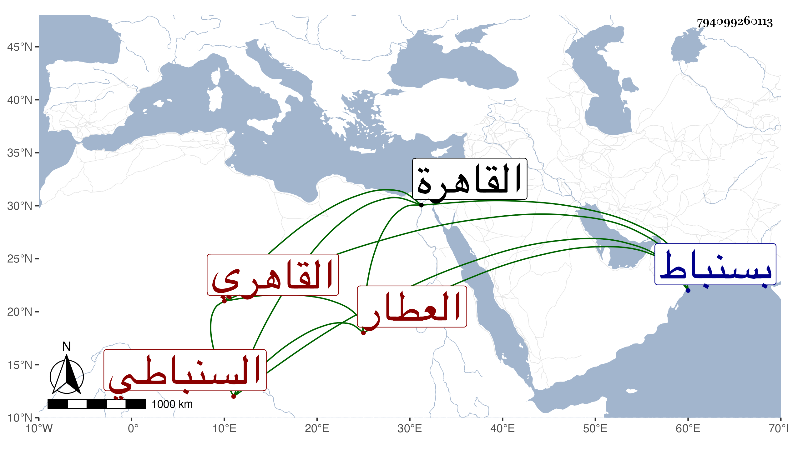

0902Sakhawi.DawLamic.ITO20230111-ara1.EIS1600.794099260113
Biography ID: 794099260113
487
محمد بن محمد بن محمد بن أحمد بن مسعود العلم بن البهاء بن العلم السنباطي القاهري العطار والد محمد وعبد اللطيف المذكورين وأبوه . ولد سنة أربع وثمانين وسبعمائة أو التي بعدها بسنباط وجده الأعلى ممن كان له اختصاص بالمحب ناظر الجيش كان صاحب الترجمة كأبيه من عدول بلده ويتكسب مع ذلك فيها بالعطر على طريقة جميلة من الخير والسداد والسكون ثم تحول إلى القاهرة في سنة إحدى وثلاثين ببنيه وعياله فقطنها وحج ولزم طريقه في الخير والتكسب والإقبال على ما يعينه حتى مات في ذي القعدة سنة تسع وأربعين ودفن بتربة الصلاحية السعيدية رحمه الله وإيانا .
